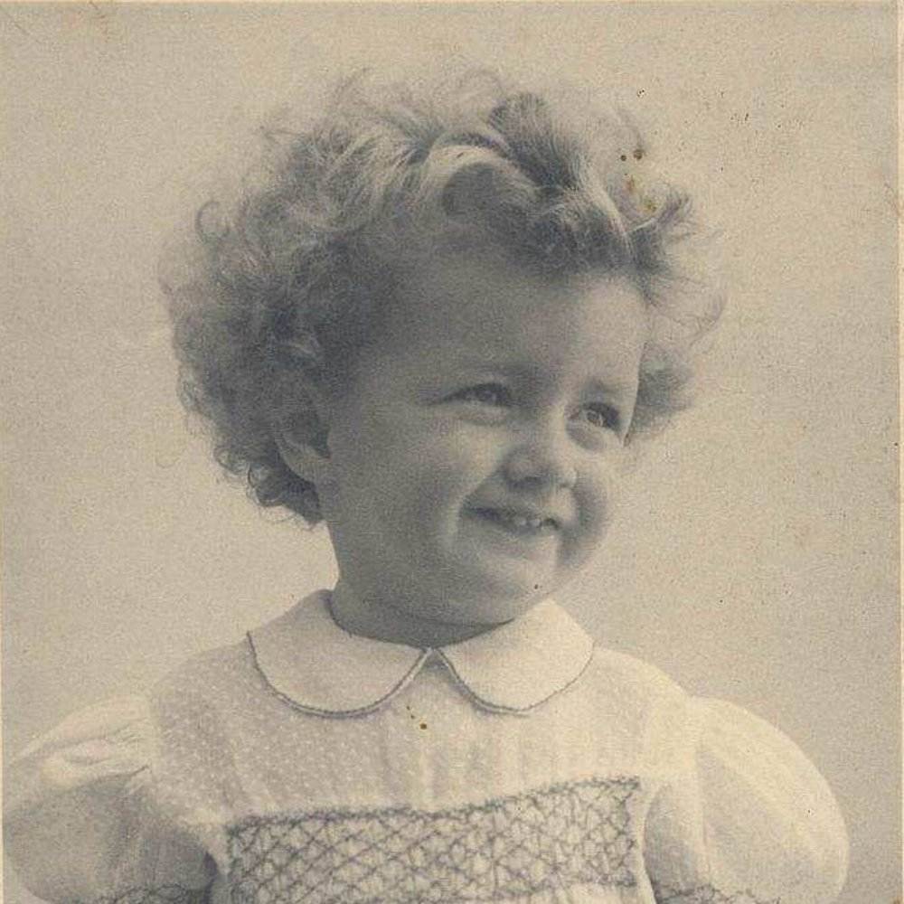

Portrait d’archive
Dominique Falk
Dominique FALK
Nom : FALK
Prénom(s) : Dominique, Eve
Date naissance : 08/04/1942
Âge (ans) : 2
Lieu naissance : Lyon
Pays ou département : Rhône
Lieu rassemblement : Annecy
Dernière adresse : Chalet les Hirondelles
Ville : Megève
Code postal : 74120
N° Convoi : 72
Date déportation : 29/04/1944
Informations diverses : née à Lyon, Fille de Félix Falk et de Denise Falk né Lion (28/06/1919, Paris) arrêtées le 19/03/1944 à Annecy. Transférées le 24/03/1944 à Drancy. Déportée à Auschwitz par le même convoi.
Sa cousine Marie-France TABET, 3 ans est également déportée par le même convoi: “Valentine Lion, ses filles Denise Falk et Monique Tabet et ses petites-filles Dominique et Marie-France sont arrêtées parce que juives et sont déportées sans retour depuis Drancy vers Auschwitz-Birkenau” Source: La Lettre de MEGÈVE, PRINTEMPS 2017, n°32).
Falk (Dominique, Eve), née le 3 avril 1942 à Lyon (6e) (Rhône), décédée le 29 avril 1944 à Auschwitz (Pologne). JO
Lieu de déportation : Auschwitz
Lieu de départ : Drancy
Nombre total de déporté·e·s du convoi : 1004
Gazé·e·s à l'arrivée : 904 (90 %)
Survivant·e·s en 1945 : 50 (5 %)